UNI: Программа расчета параметров импульса тока в активно-индуктивной нагрузке
1. Введение
Способы генерации импульсного тока в нагрузке определяются разновидностью применяемого импульсного генератора:
В ряде случаев нагрузку можно рассматривать как активно-индуктивную, представляя ее в виде последовательно включенных сопротивления R и индуктивности L (рис. 1).
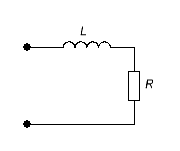
Рис. 1. Схема активно-индуктивной нагрузки.
Информативными параметрами импульса тока помимо его временной зависимости являются пиковое значение (амплитуда) и время нарастания тока от начала импульса (момента подключения нагрузки к импульсному генератору) до достижения пикового значения.
2. Обозначения:
R
– сопротивление нагрузки
L –
индуктивность нагрузки
I(t) – величина тока в нагрузке в момент времени t
U(t)
– выходное напряжение ударного генератора в момент времени
t
U0 – амплитуда выходного напряжения
ударного генератора или амплитуда прямоугольного импульса генератора
прямоугольных импульсов напряжений
Ud
– действующее значение выходного напряжения ударного генератора (Ud
= U0/√2)
f – частота изменения выходного напряжения ударного
генератора
w
= 2pf – циклическая
частота изменения выходного напряжения ударного генератора
T0
– период изменения выходного напряжения ударного генератора (T0
= 1/f = 2p/w)
или длительность прямоугольного импульса напряжения
t0 – задержка включения ударного генератора относительно момента
перехода его выходного напряжения через ноль
C –
емкость конденсаторной батареи емкостного накопителя энергии
E0
– начальное напряжение конденсаторной батареи
E(t)
– напряжение конденсаторной батареи в момент времени
t
Ri – внутреннее
сопротивление генератора импульсов тока – ударного генератора, конденсаторного
накопителя энергии или генератора прямоугольных импульсов напряжения
[8]
Li – собственная
индуктивность генератора импульсов тока
Расчеты производятся в системе СИ.
3. Теория
1. Рассмотрим генерацию импульса тока с помощью ударного генератора, выходное напряжение которого изменяется по синусоидальному закону U(t) = U0 sinw t [5, 6] (рис. 2).
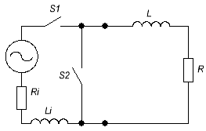
Рис. 2. Схема генерации импульса тока в активно-индуктивной
нагрузке с помощью ударного генератора.
Пусть ключ S1 замыкается в момент перехода выходного напряжения генератора через ноль (t = 0) и остается замкнутым в течение положительного полупериода. Ключ S2 при этом должен быть разомкнут. Затем, по окончании положительного полупериода в момент перехода выходного напряжения через ноль ключ S1 размыкается, а ключ S2 замыкается. Аналогичная процедура может быть произведена повторно. То есть генерация тока в нагрузке производится одной или двумя положительными полуволнами выходного напряжения ударного генератора.
В соответствии с законом Ома и вторым правилом Кирхгофа для 0 < t < T0 /2 и T0 < t < 3T0 /2:
где U(t) = U0 sinw t.
Когда T0 /2 < t < T0 , t > 3T0 /2:
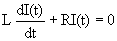
Решение уравнения при 0 < t < T0 /2:
Когда T0 /2 < t < T0:
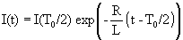
Далее, при T0 < t < 3T0 /2:
А для t > 3T0 /2:
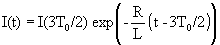
2. Пусть ключ S1 (рис. 2) замыкается в момент, когда выходное напряжение генератора не равно нулю (положительное), т. е. с некоторой задержкой (t0) относительно момента перехода выходного напряжения генератора через ноль, и остается замкнутым в течение положительного полупериода. Ключ S2 при этом должен быть разомкнут. Затем, по окончании части положительного полупериода (с учетом задержки включения t0) в момент перехода выходного напряжения через ноль ключ S1 размыкается, а ключ S2 замыкается. Данную процедуру есть смысл проводить только в течение одного полупериода выходного напряжения ударного генератора.
В соответствии с законом Ома и вторым правилом Кирхгофа для 0 < t < T0/2 – t0:
где U(t) = U0sin w(t + t0), т. е. в момент времени t = 0 U(0) = U0sin w t0 ≥ 0.
Когда t > T0/2 – t0:
Решение уравнения при 0 < t < T0/2 – t0:
Когда t > T0/2 – t0:
3. Рассмотрим генерацию импульса тока в активно-индуктивной нагрузке с помощью емкостного накопителя энергии – конденсаторной батареи емкостью C с начальным напряжением E0 [7] (рис. 3). Практический интерес представляет работа с нагрузкой без демпфирующего устройства (возможность получения затухающих колебаний тока в нагрузке).
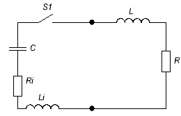
Рис. 3. Схема генерации импульса тока в активно-индуктивной
нагрузке с помощью конденсаторной батареи.
Пусть ключ S1 замыкается в момент времени t = 0 и остается замкнутым в течение всего времени разряда батареи. В соответствии с законом Ома и вторым правилом Кирхгофа:
Так как
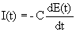
получаем уравнение для напряжения на конденсаторной батарее:
Характеристические корни этого уравнения:
Если
то разряд конденсаторной батареи является апериодическим:
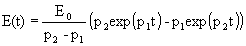
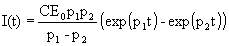
Предельный случай апериодического разряда:
При этом:
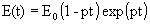
Если
то разряд конденсаторной батареи является колебательным с экспоненциально затухающей амплитудой. Угловая частота собственных колебаний w0:
Коэффициент затухания a:
Напряжение на конденсаторной батарее E(t) и ток в цепи I(t) изменяются по закону:
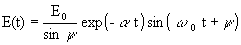
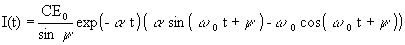
где
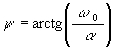
4. Рассмотрим генерацию импульса тока с помощью генератора прямоугольных импульсов напряжения, выходное напряжение которого равно U0, когда 0 ≤ t ≤ T0, и нулю, когда t > T0 (рис. 4). Ключ S1 замыкается в момент времени t = 0, подключая нагрузку к источнику напряжения U0, и размыкается в момент времени t = T0, ключ S2 в это время разомкнут, а замыкается в момент времени t = T0 и остается замкнутым, пока ток в нагрузке спадает до нуля.
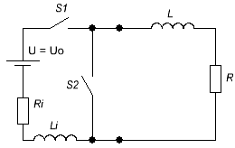
Рис. 4. Схема генерации импульса тока в активно-индуктивной нагрузке с помощью генератора прямоугольных импульсов напряжения.
В соответствии с законом Ома и вторым правилом Кирхгофа для 0 < t < T0:
Когда t > T0:
Решение уравнения при 0 < t < T0:
Когда t > T0:
4. Программа UNI (версия 2.0)
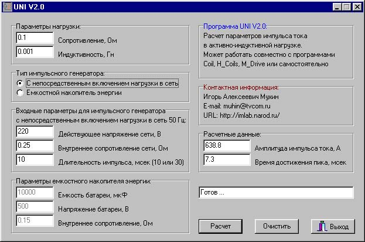
Рис. 5. Внешний вид окна программы UNI (версия 2.0).
Программа UNI позволяет найти пиковое значение (амплитуду) тока по известному закону изменения I(t) и момент времени, соответствующий пиковому значению тока для двух типов импульсных генераторов - ударного генератора и емкостного накопителя энергии. Программа написана на языке Pascal в среде программирования Delphi и предназначена для работы под управлением операционной системы (ОС) Windows 3.1/95/98/XP (с другими ОС семейства Windows не проверялась). В качестве разделителя целой и дробной частей числа по умолчанию используется точка, ее же необходимо установить в качестве разделителя для ОС (например, сопротивление = 0.1 Ом) или же при необходимости использовать в качестве разделителя запятую.
Исходные данные:
Расчетные данные:
5. Способ расчета при совместной работе с программами Coil [1], H_Coils [2], M_Drive [3]
Рассмотрим пример совместной работы программ UNI и Coil [1]. Программа Coil позволяет, в частности, рассчитывать по заданным геометрическим размерам цилиндрического соленоида, диаметру обмоточного провода и фактору упаковки активное сопротивление и индуктивность. Например, при R1 = 0.01 м, R2 = 0.02 м, H = 0.03 м, D = 0.001 м, l = 0.6 получаем активное сопротивление цилиндрического соленоида 0.4593 Ом, индуктивность 0.0008033 Гн. Полученные значения используются для расчета в программе UNI. Пусть используется импульсный генератор с непосредственным включением нагрузки в сеть переменного тока (действующее напряжение 220 В, частота 50 Гц внутреннее сопротивление 0.25 Ом) на время одного полупериода (10 мс). Рассчитанная амплитуда импульса тока равна 413 А. Затем в программе Coil подбирается такое значение действующего напряжения, чтобы рассчитанная с помощью программы Coil величина действующего тока приблизительно равнялась полученному с помощью программы UNI амплитудному значению 413 А (для этого можно вначале в программе Coil произвести расчет действующего тока при действующем напряжении 1 вольт (2.177 А), затем разделить амплитудное значение на полученное (413 : 2.177) ~ 190, это и будет требуемая величина действующего напряжения). Итак, расчетная величина действующего напряжения для программы Coil приблизительно равна 190 В. После этого с помощью программы Coil можно рассчитывать соответствующие данной величине тока значения магнитной индукции в центре соленоида (2.82 Тл) и в заданной точке пространства.
Аналогично производятся совместные расчеты с программами H_Coils и M_Drive.
6. Демонстрационная Windows-версия программы UNI: UNI_20d.rar (~80 Кбайт)
Демонстрационная версия программы UNI позволяет производить расчеты в ограниченном диапазоне данных: действующее напряжение сети не более 220 В, емкость батареи конденсаторов от 100 до 1000 мкФ, напряжение батареи не более 300 В. Файл UNI_20d.rar следует распаковать в отдельную заранее созданную папку. Упаковка производилась с помощью WinRAR 3.50. Результат распаковки: UNI_20d.exe - исполняемый файл программы. Проверить правильность расчетов можно по рис. 5.
Скопированный файл может быть проверен на отсутствие вирусного кода в режиме on-line [9].
7. Программа UNI (версия 2.1)
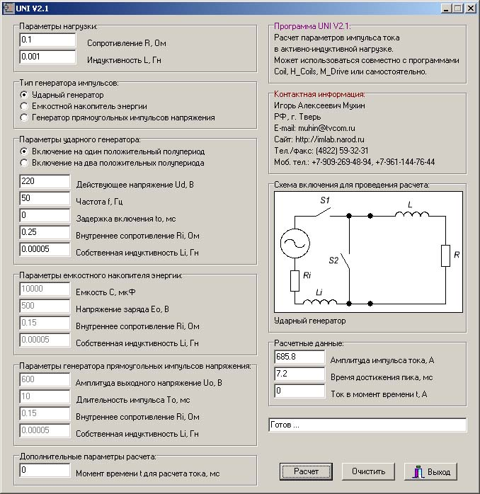
Рис. 6. Внешний вид окна программы UNI (версия 2.1).
Программа UNI V2.1 позволяет находить значение тока в заданный момент времени по известному закону изменения I(t), пиковое значение (амплитуду) тока и момент времени, соответствующий пиковому значению тока для трех типов импульсных генераторов - ударного генератора, емкостного накопителя энергии и генератора одиночных прямоугольных импульсов напряжения. Программа написана на языке Pascal в среде программирования Delphi и предназначена для работы под управлением операционной системы (ОС) Windows 3.1/95/98/XP (с другими ОС семейства Windows не проверялась). В программе исправлены некоторые неточности и недочеты версии 2.0 и добавлен ряд новых возможностей.
Исходные данные:
Расчетные данные:
По вопросу получения полной версии программы обращайтесь к автору (см. раздел Контактная информация).
Ссылки:
01.02.2007
11.10.2018
Альтернативные источники
энергии
Компьютеры и
Интернет
Магнитные поля
Механотронные системы
Перспективные
разработки
Электроника и
технология